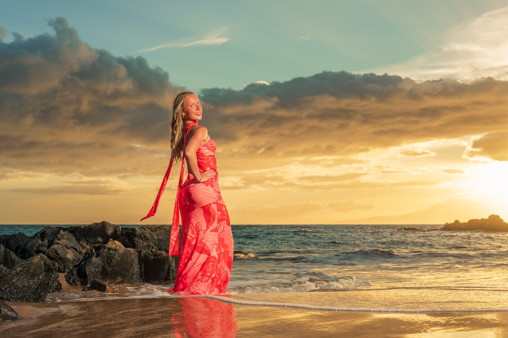
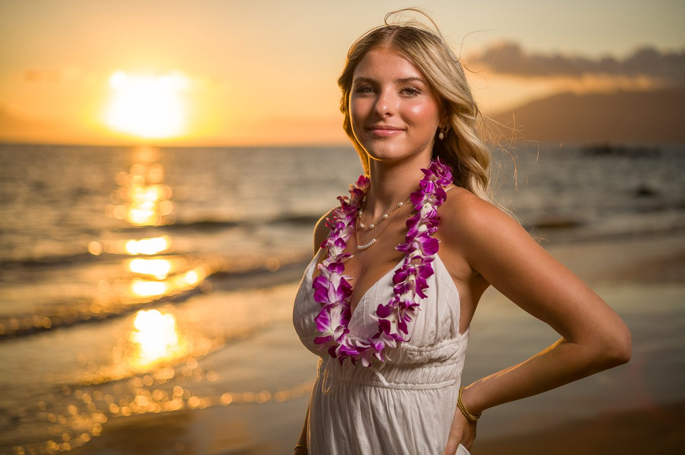
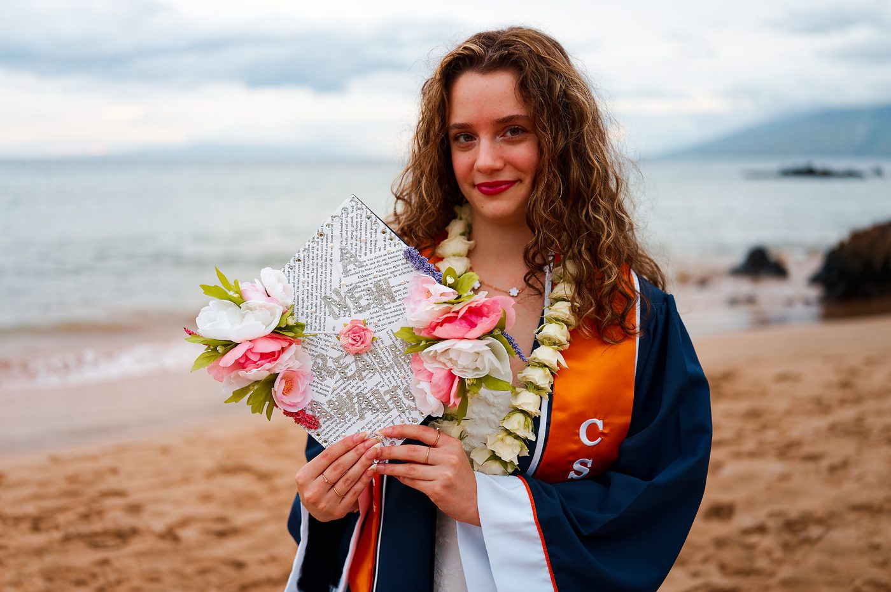
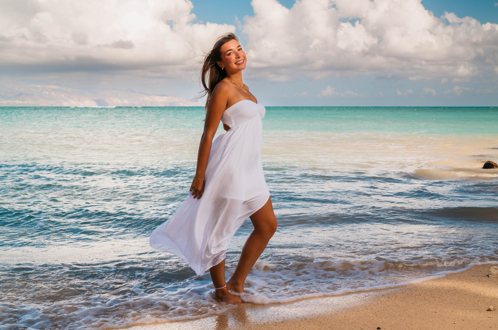

The year worth remembering.
Senior portraits made in Maui light, at the beaches we know best.
Photographs that still feel like them in twenty years.
A senior session is a portrait of someone right at the edge of leaving — confident, a little unfinished, entirely themselves. We photograph it without stiffness, letting the personality show rather than posing it away.
Bring the cap and gown, the class lei, the dress that took three weeks to choose. Bring two outfits if you want range.
We work across Wailea, Makena and South Maui, choosing the beach on the day for light, wind and privacy — driftwood, lava rock, turquoise water or open sand.
Schedule Your Session Now


professionally edited photographs included in your senior collection.
High Resolution · Full Print Rights · Hand Edited
What families ask us first.
How much does a Maui senior portrait session cost?
Senior portraits are not a separate session — choose any Sunrise or Sunset session and mention it's for senior photos when you book. Sessions start at $299.
When should we schedule senior portraits in Maui?
Most families book during a Maui vacation in the year before graduation. Sunset is the most requested; sunrise is quieter and cooler for getting ready.
Can we bring a cap, gown or lei?
Absolutely. Caps, gowns, sashes, class leis and flower crowns all photograph beautifully, and we build time into the session for them.
How many outfits can we bring?
Most seniors bring two — something relaxed and something more formal. Mention it when you book so we can allow time for the change.
Where do you photograph senior portraits?
Across Wailea, Makena and South Maui — driftwood, lava rock, turquoise water and quiet stretches of sand, chosen for light and privacy on the day.
Graduation comes fast.
Choose any sunrise or sunset session and note that it’s for senior portraits.
View Sunrise & Sunset Sessions